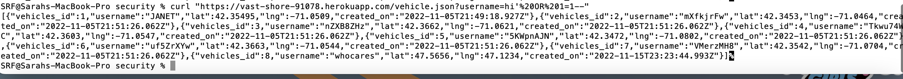

I am here to analyze if there are any security vulnerabilities within the provided node.js server.
Overall, there should be more of a focus on user input. With the get passenger.json and vehicles.json requests, the queries need to not be intermixed with code execution. Then with the rides post request, there is no prevention for a malicious person to automate the insertion into the passenger database. Creating false accounts. Finally, the \ get request displays you display the users private data, allowing doxing of location of users.
SQL Injection Vulnerability
In the /passenger.json and /vehicle.json get request.
High impact, this is due to the data release of sensitive private data.
I found it upon inspection of the code. When learning about this material in security, there was strong emphasis on not to mix code execution with direct user input.

The resolution would be to sanitize the input before passing it into the sql query, like showcased in the post /update section of the server. Also to not directly feed in user input to code that executes.
The / get route returns sensitive data, causing disclosed locations
app.get('/', function(request, response) page.
High, since this is easily displaying location of users.
Allowing access to the passenger table data to be displayed on a webpage without any authorization can be harmful to the passengers. A malicious person can use that data to pretend to be not uber and steal customers or cause harm way. Think back to the news story about how a college female got into the wrong ride sharing car and was murdered.
Found upon loading the / page
Require vehicle picker uppers to have an account in order to see passenger data. Not have any user be able to see the data.
The /update post request does not prevent a mass creation of user accounts, which is an automated threat.
app.post('/update', function(request, response)
Medium, since technically there is not a data breach, but can be harmful if the system goes down.
I found it by being able to enter a username a few times over.
Verify that the user exists by checking their username. Require verification to add to the updates.
I would suggest hiring a penetration test team to thoroughly sweep the application. Or at the very least one person who has the background knowledge of security. Can also require developers to gain certificates to understand not to make these mistakes again. I would say you are easily looking at the cost of over 100k in order to alleviate and prevent this from happening again. It could be millions if you get sued.